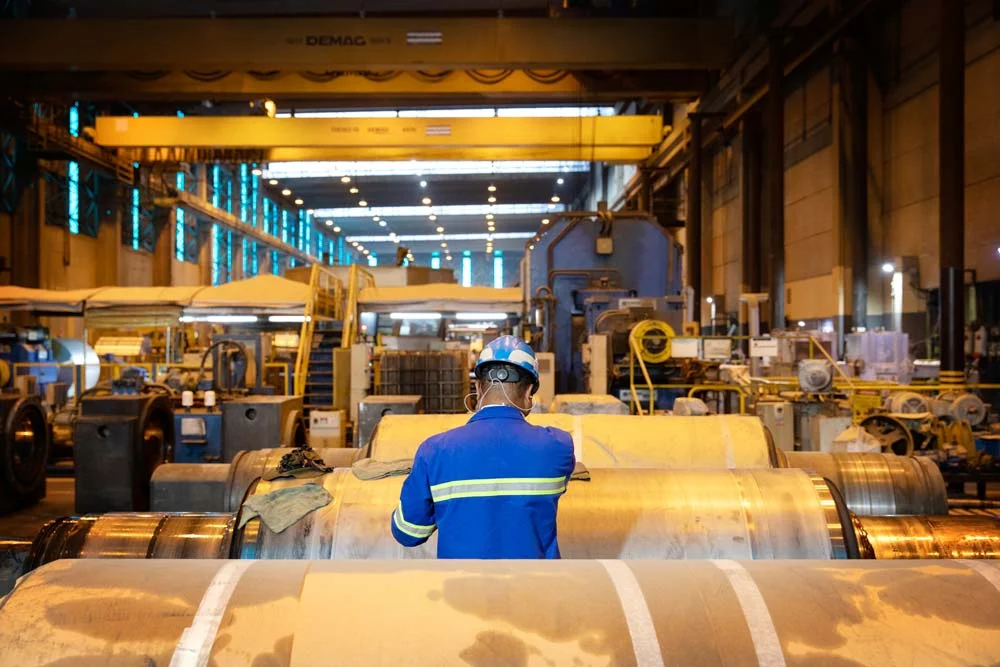
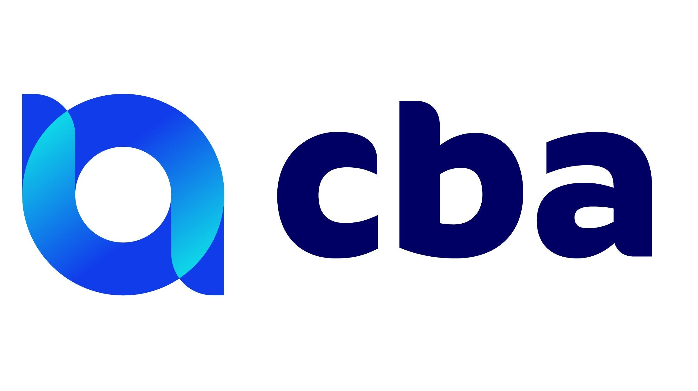
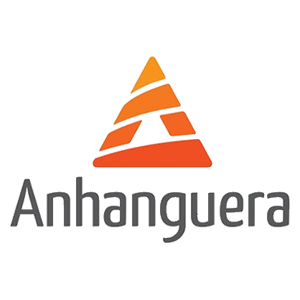

Engenheiro de Processos Sênior com mais de 25 anos de experiência na indústria do alumínio, atuando em produção, metalurgia, engenharia de processos, automação industrial e melhoria contínua.

Engenheiro de Processos Sênior com mais de 25 anos de experiência na indústria do alumínio, atuando em produção, metalurgia, engenharia de processos, automação industrial e melhoria contínua. Especialista em Lean Six Sigma (Black Belt), DFSS, Kaizen, PDCA e 5S, liderando projetos voltados à otimização operacional, eficiência energética, redução de custos e aumento da produtividade.
Ao longo da carreira na CBA – Companhia Brasileira de Alumínio (Votorantim Metais), participou de iniciativas estratégicas que resultaram em significativa redução do consumo energético, diminuição de emissões industriais e melhoria da estabilidade dos processos produtivos. Possui formação em Engenharia Química, Química e Metalurgia, combinando sólida base técnica com ampla experiência prática em ambientes industriais de alta complexidade.
Análise, mapeamento e otimização de processos industriais com foco em eficiência operacional, redução de custos e controle de variáveis produtivas.
Experiência aprofundada em processos de redução, cubas eletrolíticas e metalurgia do alumínio, com foco em estabilidade e eficiência.
Aplicação de metodologias Black Belt, DFSS, Kaizen e PDCA para transformar desafios operacionais em resultados mensuráveis.
Liderança de projetos com economia superior a 36 MW/ano, redução do efeito anódico e diminuição de emissões industriais.
Controle de processos, gestão de indicadores e desenvolvimento de soluções tecnológicas para automação e digitalização industrial.
Desenvolvimento e implementação de novas tecnologias para melhoria contínua, gestão de KPIs e otimização de ativos industriais.

CBA - Votorantim MetaisLiderança de projetos de otimização operacional, eficiência energética e melhoria contínua. Responsável pela implementação de metodologias Lean Six Sigma, resultando em economia superior a 36 MW/ano e redução significativa do efeito anódico.
CBA - Votorantim Metais
Atuação em processos metalúrgicos e controle de qualidade na produção de alumínio primário. Liderança de projetos de redução de refugos e melhoria da estabilidade operacional das cubas eletrolíticas.
CBA - Votorantim Metais
Atuação na produção de alumínio primário, com foco em operação de cubas, controle de processos e otimização de indicadores produtivos. Participação em iniciativas de expansão e modernização da planta industrial.
Instituições & Certificações

Projeto estratégico desenvolvido na produção de alumínio primário com foco na redução da frequência e duração dos efeitos anódicos, um dos principais desafios operacionais do setor.
A iniciativa envolveu a implementação de melhorias nos sistemas de controle de processo, monitoramento operacional, capacitação das equipes e otimização dos parâmetros das cubas eletrolíticas. Como resultado, foram obtidos ganhos expressivos em eficiência energética, estabilidade operacional e desempenho produtivo, além da redução da emissão de gases de efeito estufa (PFCs).
O projeto contribuiu para a diminuição do consumo de energia, redução de custos operacionais e alinhamento das operações às melhores práticas internacionais da indústria do alumínio, tornando-se uma referência interna em melhoria contínua e excelência operacional.
ETE Dr Demétrio Azevedo Jr
Anhanguera Educacional
Instituto Manchester Paulista de Ensino Superior
American Society for Quality
2022American Society for Quality
2023Estou aberto a novas oportunidades e conexões profissionais. Entre em contato pelos canais abaixo.
Telefone
+55 11 99824-6526Localização
Alumínio, SP
Tenha acesso completo à minha trajetória profissional, competências técnicas, certificações e resultados obtidos.
Currículo (imprimir / salvar PDF)Seus dados estão seguros. O download é direto e não requer cadastro.